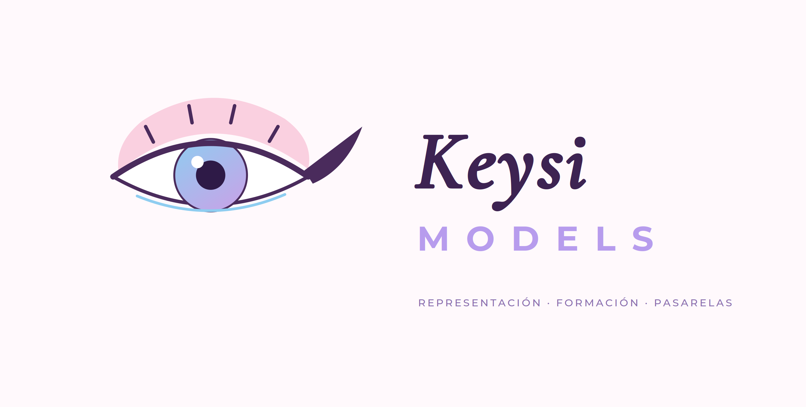

París · 2024
Paris Fashion Week — Florentina Leitner
Co-creadora y modelo con la casa Florentina Leitner, presentada en el showroom SPHERE de la Fédération de la Haute Couture et de la Mode (FHCM) durante Paris Fashion Week.

Puebla · París · Latinoamérica
presenta
Diseñadora de Moda Internacional · Modelo Elite de Pasarela
Founder & Director — Keysi Models
COLECCIÓN PERMANENTE — Fashion, Esgrima & Pole Dance
Running Order
Todo mi mundo, como en un gran evento de moda: cada sección es un look de la pasarela. Toca cualquier look para ir directo.
Look 01
Co-creadora y modelo en escenarios internacionales de moda.
París · 2024
Co-creadora y modelo con la casa Florentina Leitner, presentada en el showroom SPHERE de la Fédération de la Haute Couture et de la Mode (FHCM) durante Paris Fashion Week.
París · 2025
Co-creadora y modelo con Vautrait, casa incluida en el calendario oficial de Paris Fashion Week y semifinalista del LVMH Prize, reconocida por su sastrería y drapeado excepcionales.
París
Co-autora y modelo en About A Worker, el proyecto colaborativo parisino de Kim Hou y Paul Boulenger que convierte a las manos que hacen la moda en diseñadoras.
París · Mayo 2026
Aparición con un vestido rojo en el Palais Galliera, Museo de la Moda de la Ciudad de París, durante La Nuit des Musées, la gran noche de los museos de Europa.
México · Latinoamérica
Presentaciones de mi marca y trabajo como modelo Elite en pasarelas de México y Latinoamérica, llevando el diseño poblano a escena.
Look 02
Mi agencia de modelos en Puebla, fundada en 2023. Soy su Founder & Director.

Servicio
Representación de modelos para marcas, diseñadores y producciones que buscan talento profesional.
Servicio
Formación integral de modelos: pasarela, proyección, postura y presencia escénica.
Servicio
Producción y participación en pasarelas y eventos de moda con sello profesional.
Servicio
Bookings para campañas, editoriales, eventos y marcas en México y el extranjero.
Look 03
Mi marca de ropa y accesorios, fundada en 2022.
Diseño y creo ropa y accesorios con identidad propia. Mi firma en accesorios: aretes y piezas con bordado hecho a mano, detalle artesanal mexicano llevado a la pasarela.
Formación: Licenciatura en Diseño y Dirección de Moda — TROZMER Centro Universitario, Puebla (2025).
Look 04
Esgrimista profesional en florete y espada. Practico desde los 6 años y gano medallas desde los 12, con el Club Alpha (Titanes) de Puebla.
2015
Medallista de esgrima representando a Puebla en la Olimpiada Nacional 2015, entrevistada por el CEID Puebla.
2016
Medalla de bronce en florete individual, categoría 14-15 años, en la Olimpiada Nacional 2016 — registrado por Poblanerías. Ese mismo año, plata en categoría C en la Copa Jenkins del Club Alpha.
2019
Medalla de bronce en florete por equipos en la Olimpiada Nacional 2019, con el Club Alpha (Titanes). Entrenador: Miguel León.
Look 05
Professional Pole Dance Performer & Instructor — en escena y en clase desde los 18 años.
Clases
Clases presenciales de pole dance en Puebla, para todos los niveles.
Clases
Clases en línea desde donde estés, con seguimiento personalizado.
Escena
Presentaciones y performances profesionales para eventos y producciones.
Puebla · Desde 2023
Modelo de pole dance en Tapanko Puebla desde 2023: escenario, presencia y performance profesional.
Reserva tu clase o una presentación por LinkedIn o por Telegram (@Dalila_kunz).
Finale
Pasarelas, colaboraciones, bookings de modelos, ventas de la marca y clases de pole dance.
Español nativo · English (B2) | Puebla, México 🇲🇽